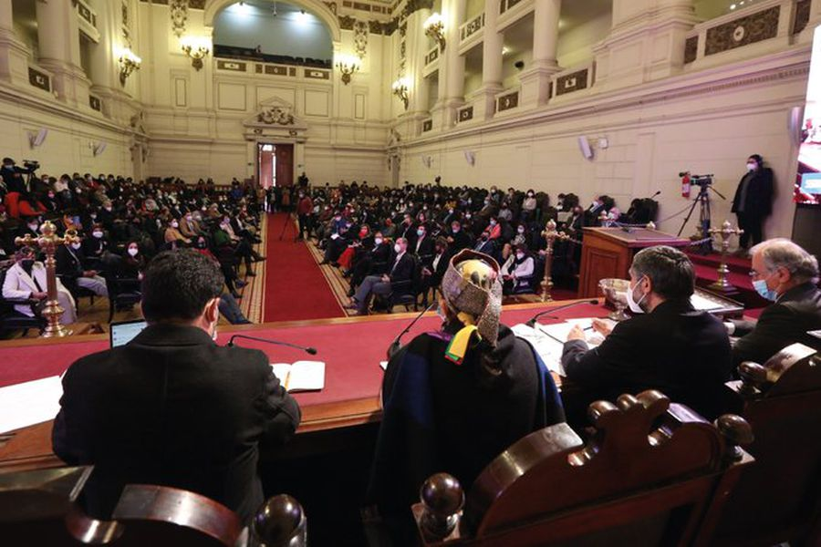

Convención Constitucional toma sus primeras definiciones en sesión inaugural: Aprueban ampliación de la mesa ejecutiva y creación de comisiones de trabajo
La mesa del órgano constituyente -dirigida por Elisa Loncón y Jaime Bassa- citó anoche a los otros 153 miembros de la instancia para sesionar a las 10.00 horas de este lunes. Entre las definiciones de esta jornada, figuran la creación de comisiones de presupuesto, ética y reglamento. Además, el vicepresidente informó que se procedió a suspender todas las nuevas licitaciones y agradeció la "red de contención" que impidió "la caída libre" de la convención. “Las condiciones no existían, y las hemos levantado prácticamente en 24 horas”, dijo Bassa. “Quiero hacer un llamado al país de que esto está funcionando bien, hay que tener unos poquitos días de paciencia para que los convencionales se instalen”. Estas palabras fueron del subsecretario de la Segpres, Máximo Pavez, a su llegada al exCongreso Nacional, minutos antes de la primera sesión convocada para este lunes a las 10.00 horas. Fue ayer cuando la mesa del órgano constituyente -encabezado por Elisa Loncón y Jaime Bassa- efectuó la citación para los encuentros de los 155 miembros para este miércoles 7 y jueves 8 en dependencias del exCongreso Nacional. Esto, luego la fallida primera sesión que estaba programada para este lunes y que no se llevó a cabo debido a “problemas técnicos”. En un primero momento, la convocatoria había quedado para el martes. Sin embargo, el día de ayer Loncón y Bassa sostuvieron una serie de reuniones con el rector de la Universidad de Chile, Ennio Vivaldi, y representantes del Colmed para avanzar en medidas que permitiesen el funcionamiento de la instancia. Finalmente, tras una revisión del gobierno de las dependencias del exCongreso en Santiago, se dio luz verde para que este miércoles los convencionales se reúnan en el recinto. Mesa de la Convención cita a sesión este miércoles tras garantizarse funcionamiento técnico por parte del gobierno Los minutos previos Por su parte, el subsecretaria Pavez comunicó que “nosotros ayer cuando comentamos en la noche la muy buena reunión que tuvimos el día de ayer con la mesa de la Convención, les comenté que mi intención como Ejecutivo era, de forma excepcional, de venir hoy día a certificar que esté todo funcionando. El equipo de la secretaría ejecutiva está acá desde las 7 de la mañana”. Además, agregó que para el cumplimiento de los protocolos sanitarios debido a la pandemia “nosotros ayer tuvimos una reunión con el ministro de Salud (Enrique Paris) quien puso a disposición a la seremi (de Salud RM) Paula Labra para poder colaborar en todos aquellos aspectos que dicen relación con la puesta en materia sanitaria”. Luego, señaló que se haría una nueva revisión de los equipos técnico. “Me interesaba revisarlos personalmente y una vez que eso esté funcionando, ojalá podamos conversar de nuevo, porque a partir de este instante que está operativo todo ya es resorte de la Convención poder ir afinando los otros temas”. En ese sentido, llamó también a la “comprensión” por ser un proceso “inédito”. “La Convención se está instalando” y reforzó que “en materia sanitaria estamos absolutamente con los protocolos de todo el mundo”, reforzó. Inicio de la primera sesión Para comenzar, se hizo lectura de las felicitaciones del presidente de la Cámara de Diputados, Diego Paulsen; así como una solicitud por parte de los medios de prensa que cubren la convención, y propuestas de normativa de funcionamiento que serán remitidos a la comisión de reglamento Con Elisa Loncon dirigiendo la primera sesión, dio el pase al vicepresidente, Jaime Bassa, para dar cuenta a la convención de las labores realizadas entre el lunes y el día de hoy. Tras transmitir su malestar y exigir una explicación por el “bochorno” que debieron atravesar el lunes, procedió a detallar las sucesivas reuniones que se han sostenido. Una suerte de cuenta pública de cara al puntapié inicial de la convención.
